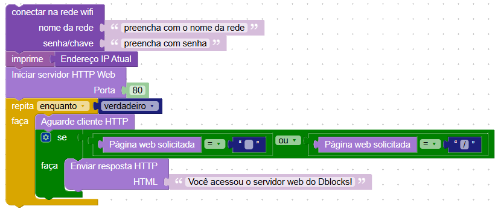

Conectividade e internet
Nesta Seção
A conectividade é um elemento essencial para projetos modernos de IoT, robótica e automação. No dBlocks, é possível conectar a placa à internet usando Wi-Fi, ou criar uma rede própria via modo ponto de acesso. Isso abre portas para controlar dispositivos remotamente, acessar servidores web, enviar dados para a nuvem, ou mesmo criar interfaces locais.
Com esses recursos, você pode desenvolver projetos como: controle de lâmpadas e relés via celular, sensores que enviam dados para dashboards, alarmes que disparam notificações em rede, ou até um servidor local acessado por qualquer dispositivo conectado à rede da placa.
Os blocos para conexão estão localizados na categoria Comunicação → Wifi. Eles permitem se conectar a uma rede existente, configurar a placa como um ponto de acesso, obter o IP atual e listar redes disponíveis.
Blocos para Wi-Fi e Acesso

- Conectar na rede Wi-Fi: insira o nome e a senha da rede para conectar a placa ao roteador local.
- Configurar Modo Ponto de Acesso: cria uma rede Wi-Fi com nome e senha definidos, permitindo que outros dispositivos se conectem diretamente à placa.
- Listar redes Wi-Fi: mostra no console todas as redes detectadas no ambiente.
- Endereço IP Atual: retorna o IP da conexão atual (modo cliente).
Conectando a uma rede Wi-Fi
Este bloco conecta a placa a uma rede Wi-Fi usando o nome (SSID) e a senha informados. É ideal para projetos que exigem acesso à internet ou comunicação com outros dispositivos na mesma rede.
Após executar o programa, o console exibirá o processo de conexão com a rede. Você verá mensagens como Waiting for Wifi connection e Connected, indicando que a placa foi conectada com sucesso.

Ao conectar a placa em uma rede Wi-Fi, ela passa a fazer parte da rede local do seu roteador — assim como seu celular e computador. Isso permite que todos os dispositivos conectados à mesma rede se comuniquem entre si, incluindo a placa.
Esse cenário é ideal para projetos em que você deseja acessar a placa a partir de outro dispositivo, como um celular enviando comandos para acender um LED, ou um computador acessando uma interface web hospedada pela placa.
Verificando o IP

Após a conexão bem-sucedida, a placa recebe automaticamente um endereço IP atribuído pelo roteador. Esse IP identifica a placa na rede e pode ser usado para acessá-la em projetos com servidor web, envio de dados ou comandos remotos.
Para visualizar esse endereço, basta usar o bloco “Endereço IP atual” junto com o bloco “imprime”. Quando o programa for executado, o IP será mostrado diretamente no console.

Esse IP será muito útil em projetos que envolvam comunicação entre dispositivos, como servidores locais ou envio de dados. Com ele, é possível configurar interações mais complexas na rede, como envio de comandos ou visualização de dados em tempo real.
Criando uma rede com a placa

Esse bloco transforma a placa em um ponto de acesso, ou seja, cria uma rede Wi-Fi própria. Dispositivos como celulares, tablets ou computadores podem se conectar diretamente a essa rede, sem a necessidade de um roteador.
Esse tipo de configuração é útil em situações em que não há rede Wi-Fi disponível, ou quando se deseja uma conexão direta e isolada entre o dispositivo e a placa, como em projetos portáteis, exposições, aulas práticas ou demonstrações locais.
Ao executar o bloco, observe o console da IDE: se a rede for criada corretamente, ele exibirá mensagens indicando que o ponto de acesso está ativo.

Após isso, você poderá ver a nova rede Wi-Fi criada no seu celular ou computador, com o nome e senha que foram definidos no bloco. Basta se conectar a ela como faria com qualquer rede comum.
No diagrama abaixo, vemos a placa atuando como um "mini roteador". Outros dispositivos podem se conectar diretamente a ela e trocar dados, como comandos ou informações de sensores.
Verificando o IP da rede criada
Após executar o bloco de ponto de acesso, é possível descobrir o IP da rede criada abrindo o console e digitando o seguinte comando:
print(ap.ifconfig())

O IP mostrado será o endereço da placa na nova rede. Ele poderá ser usado para que outro dispositivo se comunique com ela, como em um servidor local, envio de comandos, ou páginas acessadas diretamente pelo navegador.
Próximos passos
Agora que sabemos conectar a placa à internet ou criar uma rede própria, usaremos essas funcionalidades em conjunto com blocos de servidor HTTP. Isso permitirá criar aplicações interativas, como controle de LEDs, visualização de sensores e muito mais, diretamente pelo navegador.
Servidor HTTP
O protocolo HTTP é amplamente usado na internet para comunicação entre navegadores e servidores. No DBlocks, é possível transformar a placa ESP32 em um servidor HTTP, capaz de responder a solicitações vindas de dispositivos conectados à mesma rede. Isso permite criar interfaces web simples para controlar dispositivos, acessar dados de sensores e muito mais.
Entre os usos mais comuns de um servidor HTTP com a placa estão: controle de LEDs por navegador, monitoramento de sensores em tempo real, envio de comandos via navegador e exibição de informações em uma página HTML. Esse tipo de aplicação é muito útil em projetos de automação, IoT e monitoramento.
Blocos disponíveis
Os blocos da categoria "Servidor HTTP" estão localizados em Comunicação > Servidor HTTP e permitem iniciar um servidor web, aguardar conexões, interpretar as requisições recebidas e responder com conteúdo HTML ou imagens. Veja a seguir os principais blocos disponíveis:
- Iniciar servidor HTTP Web: inicia o servidor na porta informada (normalmente 80).
- Aguarde cliente HTTP: bloqueia o programa até que um cliente (como um navegador) acesse o IP da placa.
- Página web solicitada: retorna a URL que foi solicitada pelo cliente.
- Enviar resposta HTTP (HTML): permite responder ao navegador com conteúdo HTML, como texto ou botões.
- Enviar resposta HTTP (Imagem JPG): envia uma imagem como resposta, caso necessário.
- Fechar HTTP Web Server: encerra o servidor quando necessário.
Servidor que exibe uma mensagem
Vamos criar um exemplo simples em que a placa se conecta a uma rede Wi-Fi, inicia um servidor HTTP e responde com uma mensagem quando acessamos seu IP pelo navegador. Isso é útil para testar a comunicação com a placa ou como base para projetos maiores.
Nesse exemplo, os blocos fazem o seguinte:
- Conectam a placa à rede Wi-Fi informando o nome e a senha.
- Imprimem o endereço IP atribuído à placa (que será usado no navegador).
- Iniciam um servidor web na porta 80.
- Entram em um laço que aguarda requisições HTTP de clientes (como navegadores).
- Verificam se a página solicitada é a principal ("/") ou uma string vazia.
- Respondem com uma mensagem HTML simples: "Você acessou o servidor web do Dblocks!".
Resultado no navegador
Após carregar o código na placa e observar o IP mostrado no console (por exemplo, 192.168.1.124), digite esse IP na barra de endereços de qualquer navegador conectado à mesma rede Wi-Fi.
Se tudo estiver correto, você verá a mensagem programada aparecendo no navegador, como mostrado na imagem acima. Essa é uma base útil para construir páginas com mais interações, como controle de pinos, sensores ou dashboards.
Se quiser personalizar a mensagem ou adicionar novos comportamentos, você pode alterar o conteúdo do bloco de resposta HTML ou adicionar novas condições verificando Página web solicitada.
Controle de LED via navegador
Neste exemplo, vamos controlar um LED conectado à placa por meio de um navegador web. A placa se conecta a uma rede Wi-Fi e inicia um servidor HTTP. Quando acessamos o endereço IP da placa pelo navegador, ela exibe uma página com dois links: "Ligar LED" e "Desligar LED".
O programa segue a seguinte lógica: ele aguarda uma conexão HTTP e identifica qual página foi solicitada. Se a URL acessada for /on, o LED conectado na porta D2 é ligado. Se for /off, o LED é desligado.
Para isso, o programa envia uma página HTML como resposta ao navegador. Essa página contém dois links que redirecionam o usuário para as URLs específicas de controle. O HTML é uma linguagem usada para criar páginas da web. Nesse exemplo, usamos HTML básico para montar o texto e os links que o navegador interpreta como botões clicáveis.
Observações e aplicações
Esse tipo de programa é ideal para projetos de automação simples, como acender lâmpadas, ativar relés ou interagir com sensores remotamente. A vantagem é que não é necessário criar um aplicativo ou interface complexa — qualquer dispositivo com navegador (celular, tablet ou computador) pode enviar comandos para a placa.
Uma observação importante: repare que o navegador mostra na barra de endereço a URL acessada, como /on ou /off. Isso ajuda o programa a entender qual ação realizar, e você pode expandir esse conceito para incluir novos comandos ou páginas no seu projeto.
Controle de led em modo ponto de acesso
Além de conectar a placa a uma rede Wi-Fi existente, também é possível configurar a placa para criar sua própria rede, usando o modo ponto de acesso (AP). Nesse modo, dispositivos como celulares e computadores se conectam diretamente à rede da placa e acessam o servidor pelo navegador.
O programa usado é o mesmo do exemplo anterior de controle de LED. A única diferença está na forma de conexão: agora a placa cria a rede e os dispositivos se conectam a ela diretamente. Ao acessar o IP padrão da placa (geralmente 192.168.4.1), o controle funciona normalmente.
Essa abordagem é útil em locais onde não há uma rede Wi-Fi disponível. No entanto, durante os testes, pode-se notar um pequeno atraso (delay) ao acessar a interface ou enviar comandos. Isso ocorre porque o desempenho do ponto de acesso da placa pode ser limitado em comparação a um roteador tradicional.
Cliente HTTP - Acessando dados de servidores
Diferente do servidor HTTP (que aguarda conexões), o cliente HTTP realiza requisições para outros servidores da web. Isso é útil para buscar dados, como a previsão do tempo, status de sensores remotos ou acessar arquivos online.
Esse tipo de funcionalidade é muito comum em aplicações IoT, como uma placa que consulta periodicamente a temperatura de uma cidade, envia leituras de sensores para um banco de dados ou acessa comandos via web.
Blocos disponíveis para cliente HTTP
- Requisição HTTP GET: Realiza uma requisição do tipo GET para uma URL. Ideal para buscar dados sem precisar enviar nada no corpo da mensagem.
- Status da resposta HTTP: Verifica se a resposta foi recebida com sucesso (código 200 significa OK).
- Conteúdo da resposta HTTP: Mostra o que o servidor retornou. Pode ser texto simples, HTML ou dados estruturados como JSON.
- Fazer requisição HTTP POST: Envia dados (por exemplo, temperatura ou umidade) para um servidor.
Exemplo: acessando dados de um servidor
No exemplo abaixo, a placa se conecta à internet, realiza uma requisição para o endereço https://api.open-meteo.com/v1/forecast?latitude=-23.0885&longitude=-47.2094¤t_weather=true e exibe o conteúdo retornado no console.
O que acontece nesse exemplo?
- A placa conecta-se à rede Wi-Fi usando SSID e senha definidos.
- É feito um pedido (GET) para o endereço da web.
- Se o servidor retornar código 200, significa que deu tudo certo e o conteúdo será exibido no console.
- Se houver erro, o código do erro será mostrado.
Esse padrão pode ser usado com qualquer URL que retorne dados simples ou JSON. No caso de JSON, o conteúdo virá estruturado e será necessário fazer o tratamento adequado para extrair os dados desejados (isso pode exigir o uso de funções Python para manipulação de dicionários, caso necessário).
Visualizando o resultado no console
Após realizar a requisição, o conteúdo retornado será exibido no console serial. Ele estará em formato JSON, como no exemplo abaixo:
A resposta contém vários campos úteis:
- temperature: Temperatura atual em graus Celsius.
- windspeed: Velocidade do vento em km/h.
- winddirection: Direção do vento em graus (0 = Norte, 90 = Leste, etc.).
- is_day: Indica se é dia (1) ou noite (0).
- time: Horário da última medição, no formato ISO 8601 (ex: "2025-07-30T17:45").
- weathercode: Código numérico representando o tipo de tempo (sol, nublado, etc.).
No próximo exemplo, você aprenderá a interpretar esse conteúdo JSON para extrair apenas as informações desejadas, como a temperatura, e usá-las em sua aplicação.
Usando outras cidades na API
O link da requisição que usamos tem este formato:
https://api.open-meteo.com/v1/forecast?latitude=-23.0885&longitude=-47.2094¤t_weather=true
Para usar outra cidade, basta substituir os valores de latitude e longitude na URL. Você pode obter esses valores facilmente com um aplicativo de mapas como o Google Maps.
Por exemplo, para São Paulo (SP), a URL ficaria assim:
https://api.open-meteo.com/v1/forecast?latitude=-23.5505&longitude=-46.6333¤t_weather=true
Não é necessário chave de API, cadastro ou autenticação — basta acessar diretamente a URL com os parâmetros corretos.